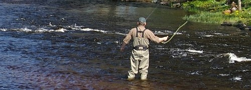

Fly fishing, in simple terms, is just a different technique of fishing that uses flies to catch fish. The sport can seem very intimidating to many because of its unique technique, casting styles, equipment, and locations to fish. However, that does not stop people from jumping in and wanting to get a deeper connection to nature as they wade through rivers and streams hoping to catch that next big fish. To start learning about fly fishing, it is important to start with the lures because the different types are made to mimic certain types of flies, thus influencing different kinds of fish. It is vital to know how to to attract the fish if you want to catch it!
Here is a good resource for beginners to get fly fishing!
One very cool thing about fly fishing is that there are so many species of fish you can catch. To be more precise, there are two categories of fish to catch, fresh and saltwater. In freshwater, anglers target trout, bass, grayling, and steelhead. In saltwater, anglers go after bonefish, tarpon, and even striped bass. The two differing ecosystems will require two differing casting and lure techniques making each cast its own unique challenge. Further, the two differing water types will bring its own geographical challenges making the angler work more.
Click here for more information on different fly lures!
| Lure Type | Description | Target Species | When to Use |
|---|---|---|---|
| Streamers | Imitates Fish | Trout, Pike, Small and Largemouth Bass | Deep water fishing |
| Dry Flies | Floats on the surface | Trout, Salmon, Small and Largemouth Bass | Surface fishing |
| Nymphs | Subsurface insect | Trout, Salmon | Bottom feed fishing |
| Wet Flies | Submurged fly | Trout, Salmon | Emerging or hatching bugs |